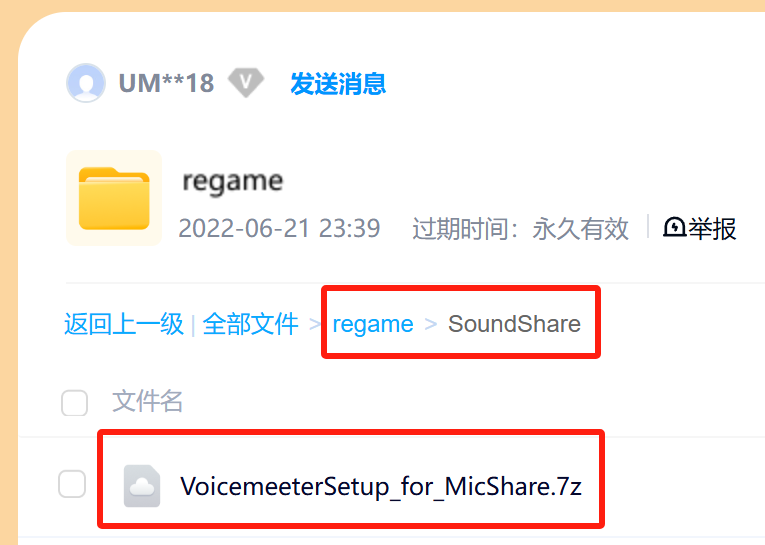
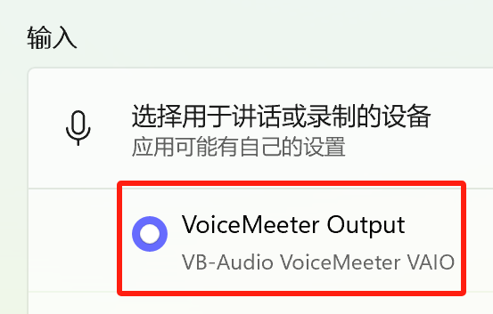

应用场景
如果您的电脑未配备麦克风，无需烦恼！只要您携带了具备高清降噪功能的手机或平板，借助麦克风共享即可将移动设备的麦克风采集到的声音数据实时同步至电脑，轻松实现卓越的音频输入体验！
版权信息
麦克风共享是免费软件，任何人不得进行二次销售！如果觉得它有用，请您帮忙推广、资助，万分感谢！
使用方法
请打开您的手机或平板的浏览器，输入以下地址：
https://IP:1218
驱动安装
目前只支持 VoiceMeeter v1.0.8.8，如果不安装，声音将直接在本机播放！
- 下载并安装虚拟声卡；

- 在电脑上使用 VoiceMeeter Output 作为音频输入设备。

高级设置
以下功能需要修改注册表，并重开本应用后生效：
- 启用 IPv6：为安全考虑，默认禁用 IPv6！查看
- 日志设定：修改日志的开关、保存路径、等级。查看
- 监听端口：修改绑定地址和监听端口。查看
- 自定义 SSL 证书：请将您自己的 cert.pem 和 key.pem 放在 %LocalAppData%\UMUTech\SoundShare\run 目录下。
完成！
恭喜！您已经掌握麦克风共享的基本使用方法。